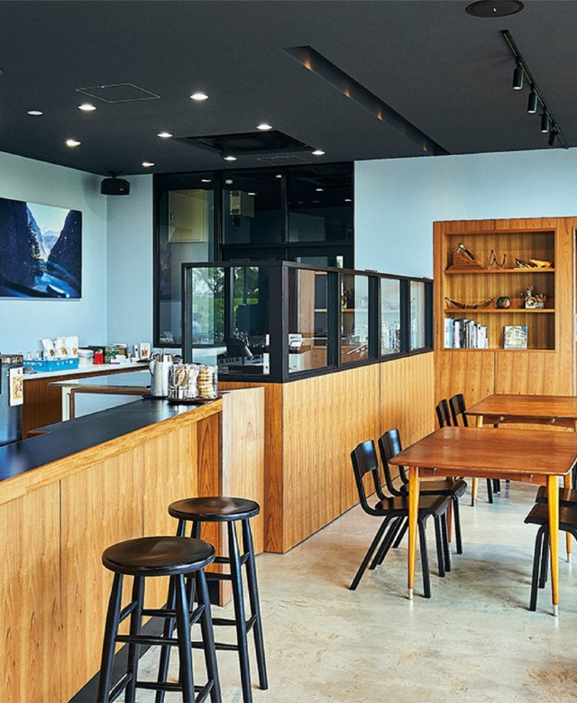
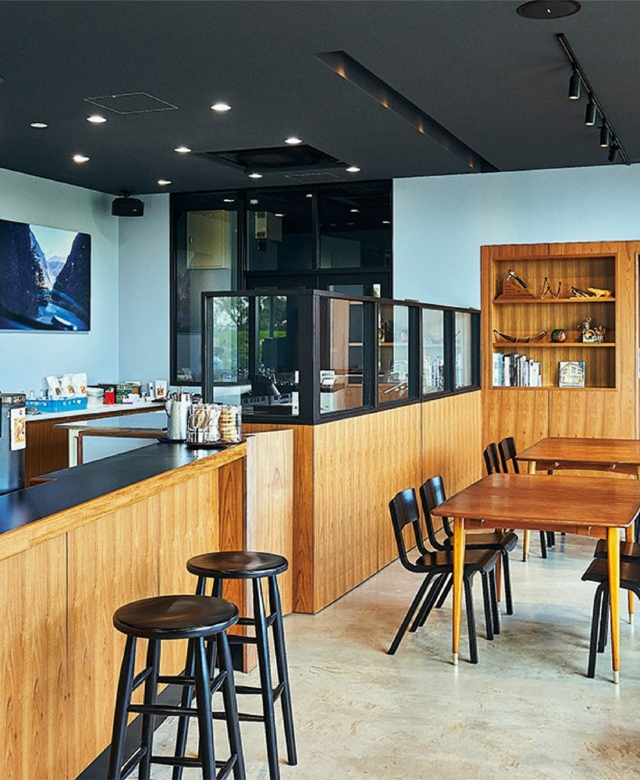
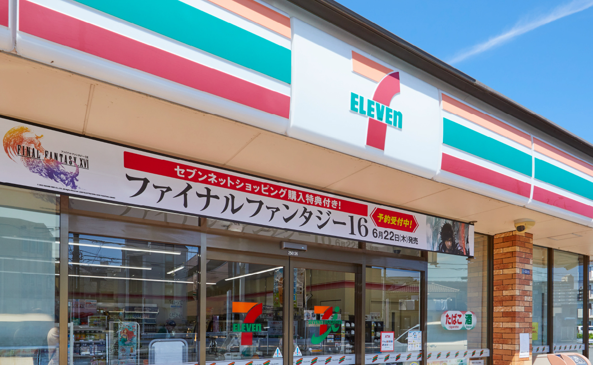
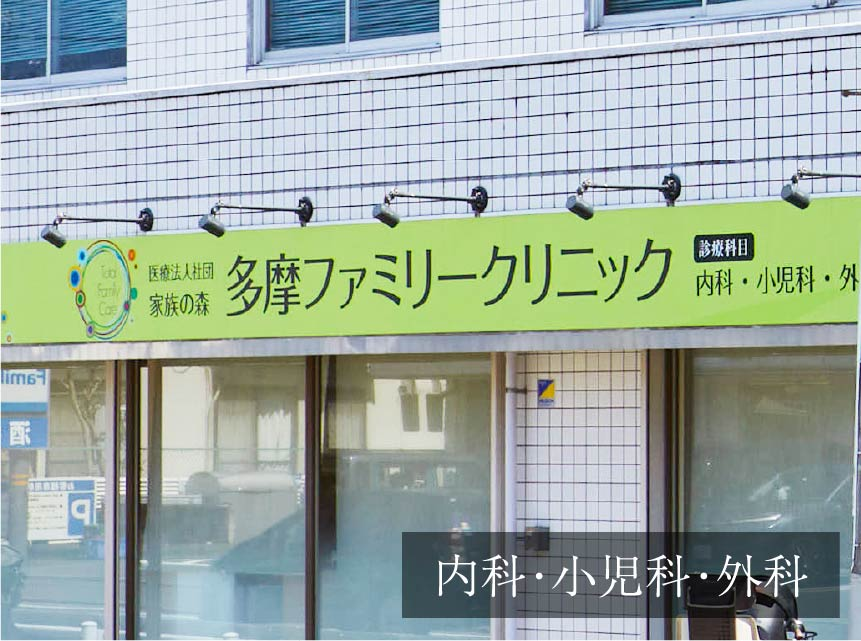
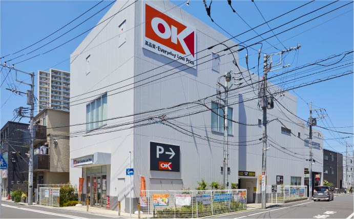
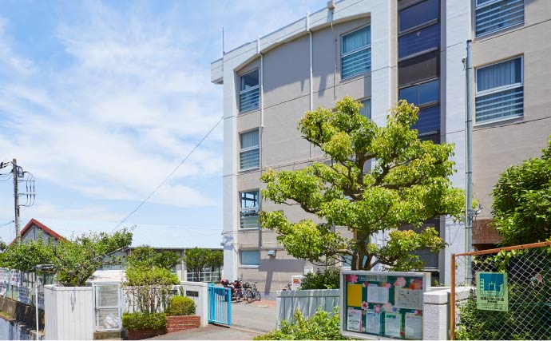
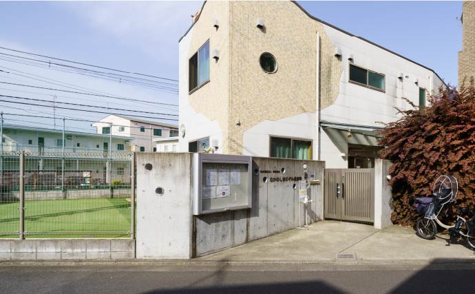

提供写真：FUGLEN COFFEE ROASTERS（約1,020m／徒歩13分）
LOCATION
「登戸」駅周辺の優れた利便性。
周辺施設マップ
-
SHOPPING
暮らしを彩る生活利便施設が充実。 -
周辺にはスーパー、ドラッグストア、コンビニなど商業施設が点在しています。また、最寄りの「登戸」駅や「向ヶ丘遊園」駅周辺には豊富な食材が揃ったスーパーなどがあり、会社帰りに利用できて便利です。
-
image photo
いなげや川崎登戸店
（約460m／徒歩6分）
-
クリエイトエス・ディー登戸新町店
（約160m／徒歩2分） -

セブン-イレブン川崎中野島4丁目店
（約440m／徒歩6分）
-
味の食彩館のぼりと
（約880m／徒歩11分） -
小田急マルシェ登戸
（約880m／徒歩11分） -
Odakyu OX 向ヶ丘遊園店
（約1,140m／徒歩15分）
-
CHILD CARE FACILITIES
図書館など子育て支援施設も身近に。 -
ホールやギャラリー、図書館、体育室などの設備を備えた川崎市多摩市民館は子育て家族を支援する心強い施設です。また多彩な公園が身近に点在し、小児科や夜間急患診療所も徒歩圏にあるなど、子育てに適した環境が揃っています。
-
image photo
川崎市多摩区役所
（約950m／徒歩12分）
-
川崎市多摩市民館［図書館］
（約950m／徒歩12分） -
登戸行政サービスコーナー
（約880m／徒歩11分）
-
登戸第2公園
（約240m／徒歩3分） -
中野島石河原公園
（約340m／徒歩5分） -
登戸第1公園
（約570m／徒歩8分）
-

多摩ファミリークリニック
（約580m／徒歩8分） -
川崎市多摩休日夜間急患診療所
（約1,060m／徒歩14分） -
川崎市立多摩病院
（約1,150m／徒歩15分）
LIFE INFORMATION

下記の項目をクリックすると施設情報がご覧いただけます。

4いなげや川崎登戸店
-
6小田急マルシェ登戸
-

8マルエツ登戸駅前店
-

9オーケー登戸店
-
1クリエイトエス・ディー登戸新町店
1
クリエイトエス・ディー登戸新町店
約160m／徒歩2分
2
しまむら登戸店
約430m／徒歩6分
3
セブン-イレブン川崎中野島4丁目店
約440m／徒歩6分
4
いなげや川崎登戸店
約460m／徒歩6分
5
ウェルパーク川崎中野島5丁目店
約610m／徒歩8分
6
小田急マルシェ登戸
約880m／徒歩11分
7
味の食彩館のぼりと
約880m／徒歩11分
8
マルエツ登戸駅前店
約900m／徒歩12分
9
オーケー登戸店
約1,110m／徒歩14分
10
Odakyu OX 向ヶ丘遊園店
約1,140m／徒歩15分
9川崎市藤子・F・不二雄ミュージアム
-
1多摩川
-

11かわさき宙と緑の科学館
（川崎市青少年科学館）
-
8生田緑地
-
13川崎市岡本太郎美術館
1
多摩川
約200m／徒歩3分
2
登戸第2公園
約240m／徒歩3分
3
中野島石河原公園
約340m／徒歩5分
4
稲田多摩川公園
約590m／徒歩8分
5
ジム&スタジオルネサンス登戸
約920m／徒歩12分
6
多摩川緑地（中野島地区）
約1,170m／徒歩15分
7
二ヶ領用水
約1,360m
8
生田緑地 ※戸隠不動口まで
約1,830m
9
川崎市藤子・F・不二雄ミュージアム
約2,310m
10
市立日本民家園
約2,310m
11
かわさき宙と緑の科学館
（川崎市青少年科学館）
約2,510m
12
川崎国際生田緑地ゴルフ場
約2,790m
13
川崎市岡本太郎美術館
約2,810m
9KFJ多摩スカイキッズ児童館
-
6市立登戸小学校
-

10市立枡形中学校
-
1ぶどうの実登戸園
-

4なかのしまのぞみ保育園
1
ぶどうの実登戸園（私立）
約170m／徒歩3分
2
ゆい保育園たまがわ（私立）
約340m／徒歩5分
3
中野島のはら保育園（私立）
約390m／徒歩5分
4
なかのしまのぞみ保育園（私立）
約580m／徒歩8分
5
カリタス幼稚園（私立）
約720m／徒歩9分
6
市立登戸小学校（通学区）
約760m／徒歩10分
7
カリタス小学校（私立）
約770m／徒歩10分
8
KFJ多摩なのはな保育園（私立）
約840m／徒歩11分
9
KFJ多摩スカイキッズ児童館
約840m／徒歩11分
10
市立枡形中学校（通学区）
約2,270m
12川崎市立多摩病院
-
2鈴木内科医院
-
4多摩ファミリークリニック
-
5登戸内科・脳神経クリニック
-
11川崎市多摩休日夜間急患診療所
1
ゆう歯科・口腔外科クリニック登戸院
（歯科）
約150m／徒歩2分
（歯科）
2
鈴木内科医院
（内科・消化器科）
約210m／徒歩3分
（内科・消化器科）
3
木下医院
（整形外科、リハビリテーション科）
約230m／徒歩3分
（整形外科、リハビリテーション科）
4
多摩ファミリークリニック
（内科、小児科、外科）
約580m／徒歩8分
（内科、小児科、外科）
5
登戸内科・脳神経クリニック
（内科、脳神経内科、循環器内科、リハビリテーション科）
約720m／徒歩9分
（内科、脳神経内科、循環器内科、リハビリテーション科）
6
のぼりと皮膚科
（皮膚科）
約880m／徒歩11分
（皮膚科）
7
川崎・多摩アイクリニック
（眼科）
約900m／徒歩12分
（眼科）
8
なかむらこどもクリニック
（小児科、アレルギー科）
約900m／徒歩12分
（小児科、アレルギー科）
9
登戸クリニック
（一般内科、漢方内科、血液透析）
約970m／徒歩13分
（一般内科、漢方内科、血液透析）
10
のぼりとキッズクリニック
（小児科、アレルギー科、小児皮膚科）
約1,000m／徒歩13分
（小児科、アレルギー科、小児皮膚科）
11
川崎市多摩休日夜間急患診療所
（内科、小児科）
約1,060m／徒歩14分
（内科、小児科）
12
川崎市立多摩病院
（救急災害医療センター）
約1,150m／徒歩15分
（救急災害医療センター）

4川崎市多摩区役所
-

2登戸行政サービスコーナー
-
6市立多摩図書館
-
8登戸郵便局
-
9多摩警察署
1
中野島こども文化センター
約510m／徒歩7分
2
登戸行政サービスコーナー
約880m／徒歩11分
3
みずほ銀行登戸駅出張所
約880m／徒歩11分
4
川崎市多摩区役所
約950m／徒歩12分
5
川崎市多摩市民館
約950m／徒歩12分
6
市立多摩図書館
約950m／徒歩12分
7
三菱UFJ銀行登戸支店
約1,060m／徒歩14分
8
登戸郵便局
約1,130m／徒歩15分
9
多摩警察署
約1,350m
※掲載の周辺イラストマップ・地図は、一部道路・施設等を抜粋して表記しています。
※距離表示については地図上の概測距離を、徒歩分数表示については80ｍを1分として算出し、端数を切り上げたものです。
※掲載の写真は2023年4月・6月撮影。
※掲載の情報は2023年4月現在のものです。
※店舗・施設の内容等は将来変わる場合があります。